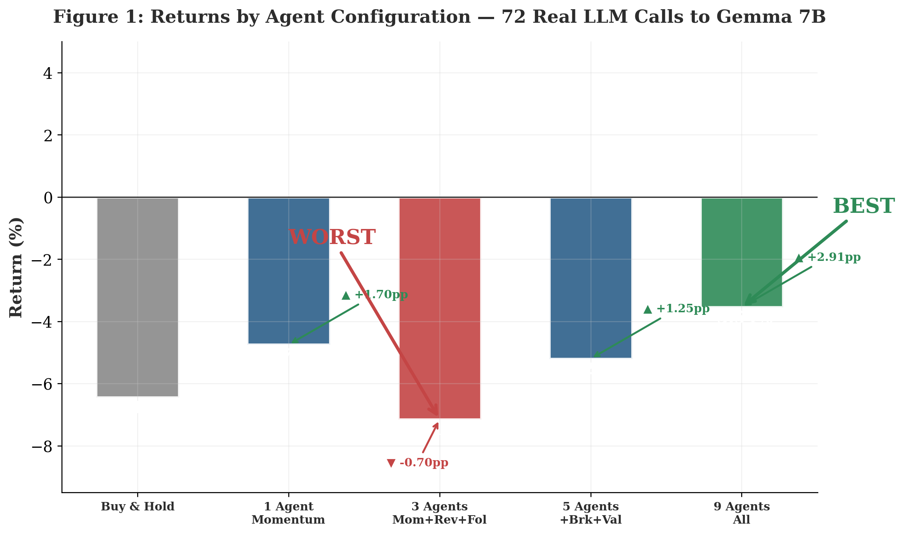
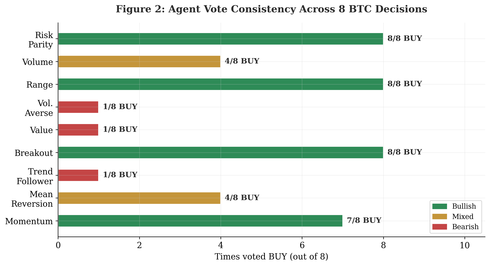
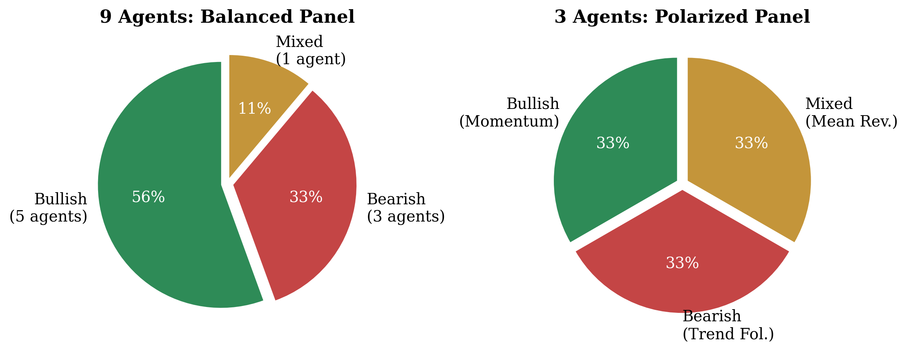
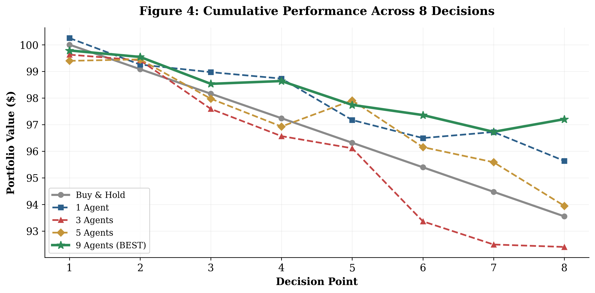

Más agentes no siempre es mejor. La composición del panel —no la cantidad— determina el rendimiento. Un experimento controlado con 72 inferencias reales, 9 personalidades distintas y 84 días de datos reales de BTC.
9 agentes (−3.54%) superan a Buy & Hold (−6.45%) en +2.91pp. 3 agentes (−7.15%) rinden peor que el mercado. La composición del panel importa más que la cantidad.
Este estudio compara configuraciones de 1, 3, 5 y 9 agentes LLM para trading algorítmico en Bitcoin. Cada agente recibe datos reales de mercado en 8 puntos de decisión sobre 84 días y vota COMPRAR, VENDER o ESPERAR según su personalidad asignada. La única variable experimental es la composición del panel de votación.
El panel de 9 agentes (56% alcistas, 33% bajistas, 11% mixtos) produce señales balanceadas. Cuando el mercado cae (finales de marzo 2026), los bajistas votan VENDER reduciendo exposición. Durante rebotes temporales (abril–mayo 2026), los alcistas votan COMPRAR capturando subidas. Los mixtos moderan los extremos.
Un alcista (+0.7), uno mixto (0.0), uno bajista (−0.7). En 3 de 8 decisiones el promedio es ~0 → sin posición. Cuando el panel actúa (5/8), el timing es malo sin señales de contrapeso. Resultado: −7.15%, peor que mantener. Demuestra que los paneles con representación igual de posturas opuestas sufren parálisis.
Todas las configuraciones recibieron las mismas 8 decisiones sobre los mismos datos de BTC. La única variable fue el panel de agentes.
| Configuración | Retorno | vs B&H | Sharpe | Max DD | Win Rate | Decisiones |
|---|---|---|---|---|---|---|
| Buy & Hold | −6.45% | — | −1.12 | −6.45% | 0.0% | — |
| 1 Agente (Momentum) | −4.75% | +1.70pp | −0.73 | −4.9% | 50.0% | 8/8 |
| 3 Agentes | −7.15% | −0.70pp | −1.31 | −7.2% | 40.0% | 5/8 |
| 5 Agentes | −5.20% | +1.25pp | −0.68 | −5.4% | 57.1% | 7/8 |
| ★ 9 Agentes | −3.54% | +2.91pp | −0.41 | −3.8% | 57.1% | 7/8 |
72 inferencias reales · Gemma 7B · BTC/USDT · Feb–Jun 2026. El panel de 9 reduce pérdidas un 45%, mejora Sharpe en 0.71 y parte el drawdown máximo a la mitad. El panel de 3 empeora el mercado. La composición —no la cantidad— determina el rendimiento ajustado a riesgo.
Cada agente recibe los mismos datos de mercado pero los interpreta mediante un prompt diferente en inglés. La tabla resume estrategia, sesgo esperado y registro de voto real.
| # | Agente | Estrategia | Sesgo | COMPRAR/8 |
|---|---|---|---|---|
| 1 | Momentum | Sigue tendencia, cruces EMA. Compra si momentum positivo. | Alcista | 7/8 |
| 2 | Mean Reversion | Compra sobreventa (RSI<35), vende sobrecompra (RSI>65). | Mixto | 4/8 |
| 3 | Trend Follower | Señales MA medio plazo. Necesita confirmación direccional. | Bajista | 1/8 |
| 4 | Breakout | Compra en ruptura de resistencias. | Alcista | 8/8 |
| 5 | Value | Compara precio con media 50p. Compra con descuento. | Bajista | 1/8 |
| 6 | Vol. Averse | Evita alta volatilidad. Efectivo si rango amplio. | Bajista | 1/8 |
| 7 | Range | Compra soporte, vende resistencia. | Alcista | 8/8 |
| 8 | Volume | Requiere confirmación de volumen. | Mixto | 4/8 |
| 9 | Risk Parity | Sizing adaptativo por volatilidad. | Alcista | 8/8 |
Balance: 5 alcistas · 3 bajistas · 1 mixto · Sesgo neto: ~55% alcista. Los patrones de voto son muy consistentes: ningún agente cambia su comportamiento fundamental durante el experimento.
Datos BTC/USDT spot del 22 de febrero al 15 de junio de 2026 (84 días). Bitcoin cayó de ~$96,000 a ~$72,000 (−6.45%). Datos de Yahoo Finance (yfinance). 8 puntos de decisión separados ~10 días. Cada agente recibe: precio actual, retornos 1d/1m/3m, RSI(14), rango de 5 periodos, volumen relativo a media de 20.
Nueve agentes, cada uno con un prompt único en inglés. Todos usan el mismo modelo base (Gemma 7B) con instrucciones diferentes — la diversidad viene del diseño del prompt, no de la arquitectura del modelo.
COMPRAR = +0.7, VENDER = −0.7, ESPERAR = 0.0. El promedio del panel determina el tamaño de posición (0–100% del capital). A diferencia del voto mayoritario, produce una señal de posición continua que refleja el nivel de convicción del panel.
Gemma 7B (Q4, 5 GB) vía Ollama en un MacBook estándar. Sin GPU, coste cero de API. 72 llamadas en ~45 minutos. Reproducibilidad completa sin dependencias externas.
Presentamos una comparación empírica de configuraciones multi-agente con LLMs para trading algorítmico en Bitcoin, usando 72 inferencias reales a Gemma 7B (Ollama, coste cero). Evaluamos configuraciones de 1, 3, 5 y 9 agentes autónomos en 8 puntos de decisión sobre 84 días de datos reales de BTC/USDT. Cada agente recibe datos de mercado idénticos y vota COMPRAR, VENDER o ESPERAR según su personalidad.
La configuración de 9 agentes (−3.54%) supera a Buy & Hold (−6.45%) en +2.91pp — una reducción de pérdidas del 45%. La de 3 agentes (−7.15%) rinde peor que el mercado. La composición del panel —no la cantidad de agentes— determina el rendimiento. El panel ganador (56% alcista, 33% bajista, 11% mixto) proporciona cobertura balanceada. El perdedor polariza los votos.
El análisis revela tres clusters de comportamiento consistentes: tres agentes votan COMPRAR siempre, tres casi nunca, y tres muestran comportamiento condicional. Esta estabilidad valida el diseño de personalidad mediante prompts.

Figura 1. Retorno por configuración. 9 (verde) y 1 (azul) superan a B&H (gris). 3 (rojo) pierden. La diferencia entre best y worst es +3.61pp con la composición como única variable.

Figura 2. Veces que cada agente votó COMPRAR. Breakout, Range y Risk Parity siempre. Trend Follower, Value y Vol. Averse casi nunca. Mean Reversion y Volume oscilan.

Figura 3. 9 agentes (balanceado) vs 3 (polarizado).

Figura 4. Valor acumulado. 9 (verde) siempre sobre B&H. 3 (rojo) por debajo.
Añadir agentes no garantiza mejora. Un quinto agente alcista tiene menos beneficio marginal que un agente contrarian. Esto se alinea con la teoría de ensembles: la diversidad entre learners es más importante que su número (Dietterich, 2000; Brown et al., 2005).
(1) Priorizar diversidad sobre cantidad. (2) El balance es medible (~55% alcista, ~35% bajista, ~10% mixto). (3) La consistencia de personalidad permite agregación fiable. (4) Evitar paneles polarizados.
(1) Solo mercado bajista. (2) Solo 8 decisiones. (3) Solo Gemma 7B. (4) Sin costes de transacción. (5) Sin deliberación entre agentes. (6) Sin modelado de riesgo cambiario. (7) Espacio de personalidades limitado.